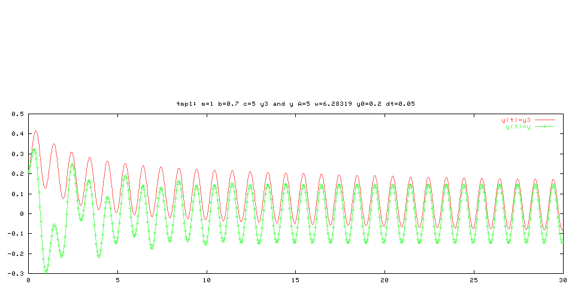

Simulation of an oscillating system
[ problem specification]
[ parameter values]
[ results]
[ general HTML info ]
Problem specification:
We concider an oscillating system, such as a pendulum, a moored ship,
or a jumping washing machine. The system is described by the following
second-order linear differential equation with two initial conditions:
my,tt + by,t + cf(y) = Acos(wt)
y(0) = y0
y,t(0) = 0
The physical interpretation of the terms are as follows:
-
The first term reflects the mass times the acceleration of the system,
-
the second term, bdy/dt, denotes a damping force,
-
cf(y) is a restoring force, e.g., a spring, while
-
Acos(wt) is an external force applied to the system.
A sketch of the system is given below.

Sketch of the system
The table lists the input parameter values for this simulation.
Default values are used for the parameters that are not set
as command-line options.
Parameter input values
| Command line input option |
Parameter value |
| -m |
1 |
| -b |
0.7 |
| -c |
5 |
| -func |
y3 |
| -A |
5 |
| -w |
6.28319 |
| -y0 |
0.2 |
| -tstop |
30 |
| -dt |
0.05 |
The figure below shows a plot of a (numerical) solution of the
differential equation. The time interval for the simulation
is [0:30]. The plot compares a restoring force f(y)=y with f(y)=y*y*y.

Plot of the displacement of a nonlinear oscillator
and its linear counterpart